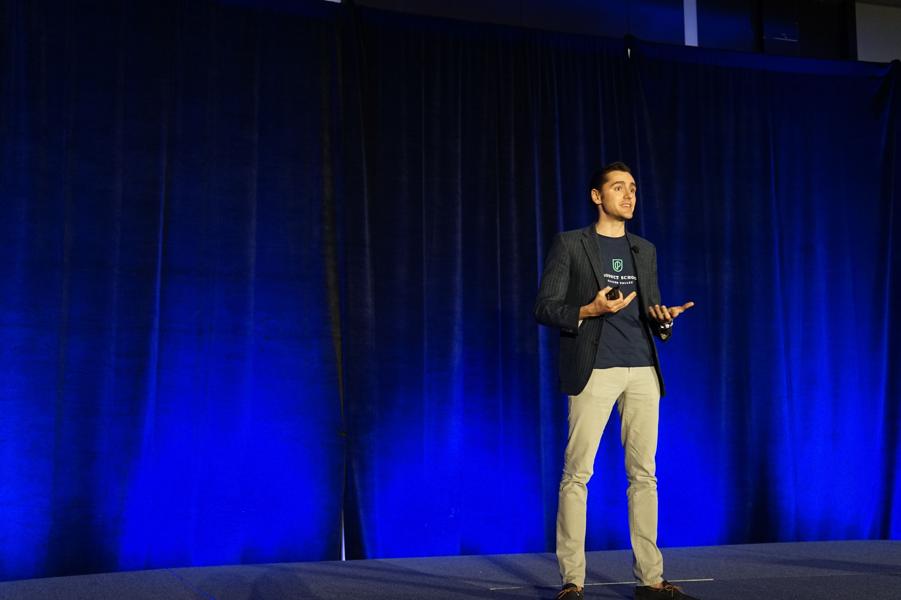

Page Contents
Powerful orators have always been able to sway an audience. Here are the 21 best motivational speakers who carry on that tradition.
From Martin Luther King to Winston Churchill and Abraham Lincoln, those who can communicate messages with clarity and emotion often rise to positions of power and authority.
However, political movements are not the only domain in which speakers can influence your psychology and change your mind. Over the last century, in particular, we've seen the widespread commercialization of motivational speakers.
These people inspire us to question, push, and reinvent ourselves. They allow us to gain realizations about our nature and potential, which we may have otherwise been unable to develop on our own.
While they often have books, the power of the spoken word cannot be understated.
We can learn lessons from their lives and begin to believe in ourselves as they encourage us to embody our beliefs. It may sound cliche, but the line between success and failure is slim and often purely a psychological barrier.
By listening to these individuals, you can break through that mental barrier and achieve things you never thought possible. So here are the 21 the best motivational speakers you should follow today.
1. Lisa Nichols
Lisa Nichols is an inspiration for single moms everywhere. With literally nothing to her name and living in an abusive relationship, she was able to climb out of poverty by using her voice. Through her coaching and speaking, she has been able to touch millions of lives.
If you feel like you’re being weighed down and held back by your financial situation, Lisa is the perfect speaker to inspire you to overcome the psychological restraints holding you back. Her charisma and positivity make her a joy to listen to.
2. Nick Vujicic
This speaker doesn’t fit the stereotypical image of a motivational guru. Nick Vujicic was born with tetra-amelia syndrome, an incredibly rare condition that meant he came into the world without either arms or legs. In fact, it is so rare, he is believed to be one of only seven other people living with the syndrome.
A Christian, Vujicic dealt with bullying for much of his life, but after this Australian began to give talks at his prayer group, he quickly became an inspiration for all those around him.
He has since released several motivational books and moved to California to support his thriving career as a motivational speaker. If you want to hear from someone who has beaten all the odds to claim greatness, you’ll want to listen to his incredible talks and motivational quotes.
3. Eric Thomas
ET the Hip Hop Preacher is one of the first motivational speakers to capitalize on YouTube to build a multimillion-dollar speaking business.
Eric Thomas has an incredible story. After coming from a rough area of Detroit and a single-parent home, he spent time homeless on the streets and was inspired by his Pastor to change his life.
After many grueling years of hard work, he not only went back to high school to get his GED, he went on to get a master’s and a Ph.D. With over 750,000 subscribers on YouTube and a charismatic, high-energy style, ET is the perfect motivational speaker to get you through a week at the office with the popular series “Thank God It’s Monday!”
4. Grant Cardone
If you’re looking to build a business and want a speaker who can push you to believe that anything is possible, Grant Cardone is the one to follow.
He is another speaker who has been profitable from the Digital Age, building a $750 million empire with a sales-focused business. He is known for his high-energy and no holds barred approach to sales and marketing.
He now has his own sales training, Cardone University, which teaches entrepreneurs to be fearless in sales, negotiations, cold calling, and closing. His programs are expensive, but you can find dozens of hours of his content for free on YouTube.
5. Wayne Dyer
Wayne Dyer helped birth the modern self-help movement with his first book, Your Erroneous Zones, selling over 35 million copies. He spent most of his early life in an orphanage, going on to work as a professor of counseling psychology at St. John’s University in New York City.
After his academic lectures began to gain popularity for their focus on positive thinking, he was contacted by a literary agent. Dyer’s first book was a huge success, and he went on to write dozens of other books, including many best sellers.
He was highly influenced by Eastern Philosophy and is a great speaker to follow if you are interested in psychology and spirituality.Though he passed away in 2015, you can still see many of his lectures on YouTube and his books continue to be widely popular.
6. Tony Robbins
If speakers like Wayne Dyer birthed the modern motivational speaker, Tony Robbins perfected the blueprint. By far the most successful speaker of all time, Robbins’ early books, such as Unlimited Power and Awaken the Giant Within, helped catapult him to stardom and build several companies valued at over $6 billion in annual sales.
His High-Energy Lectures use principles from Neurolinguistic Programming and popular psychology to inspire audiences worldwide. He is also widely known for his philanthropic endeavors, and his teachings are typically focused on health, wealth, and living a balanced life.
If you are feeling low in energy and want someone to pull you out of a rut, Tony Robbins is a great speaker to listen to; his audiobooks have definitely stood the test of time.
7. Les Brown
Les Brown is another top motivational speaker we want to make mention of. In addition to motivational speaking engagements, Brown is also a former television host and politician, as well as an author and radio DJ. His famous catchphrase is “it’s possible!”
Brown teaches people how to follow their dreams just as he has done. Brown has spoken in front of crowds with more than 80,000 people in attendance. He energizes and motivates people from all walks of life.
8. Oprah Winfrey
Oprah Winfrey is best known for her talk show, The Oprah Winfrey Show. It aired from 1986 to 2011. She is also often ranked as one of the most powerful women in the world. Winfrey is a leading philanthropist and media executive who has reached countless amounts of people while changing their lives.
Winfrey is not a motivational speaker by profession but has done keynote speeches that people have said are empowering and inspiring. She awakens people to find a deeper connection within themselves and the world in which they live.
9. Dave Ramsey
Dave Ramsey is a top motivational speaker, American financial author, radio host, and television personality. He focuses on encouraging people to get out of debt. He hosts a nationally syndicated radio program known as the Ramsey Show.
Ramsey teaches people how to budget, overcome debt, and shows them the best way to save and invest for their future. He is also well-known for his 7 Budgeting Baby Steps. His voice is strong, and he speaks with authority, captivating the attention of his audience at every turn.
10. Magic Johnson
Magic Johnson is famous for being an American former professional basketball player. He is regarded as one of the best point guards of his time, but is also one of the best motivational speakers.
He played for 13 seasons in the National Basketball Association. Now, he is a top keynote speaker and chairman and CEO of Magic Johnson Enterprises.
People speak of Johnson’s commanding presence in popular culture. He believes that leadership doesn’t change a person’s character. Instead, it reveals their character and magnifies core values.
11. Suze Orman
Suze Orman is another top motivational and inspirational speaker, American author, financial advisor, and television host. She founded the Suze Orman Financial Group in 1987, and her show began airing in 2002 on CNBC and won a Gracie Award.
Orman is well-renowned and speaks annually to over 100,000 people throughout the United States and around the world. She is best known for her unconventional approach to money and combined personal finance with personal growth.
12. Robin Sharma
Robin Sharma is more than a great motivational speaker. He is a premier speaker on leadership and personal mastery. In fact, he was named one of the world’s top leadership experts.
He is a Canadian writer and self-published a stress management and spirituality book. It is said that Sharma has the rare ability and talent to electrify an audience while delivering useful insights.
Sharma’s other book, The Leader Who Had No Title, also has topped international bestseller lists, and his social media posts have the power to reach millions each year. He shows people how to thrive among change and do brilliant work.
13. Daymond John
Daymond John is another motivational speaker with a rags-to-riches kind of success story. His is a story of sacrifice, hard work, and perseverance. John is a businessman, investor, and TV personality based in New York City and is the founder of the Shark Group.
Daymond John speaks on several topics, including overcoming obstacles to gain success, goal setting, sales, and negotiation. The way he communicates with his audience is described as charismatic and inspiring.
14. Arianna Huffington
Arianna Huffington is the founder of Thrive Global and co-founder and editor-in-chief of HuffPost. She is a prominent and influential feminist and motivational speaker.
She speaks about topics related to business leadership, increasing productivity, and the importance of health. Huffington has two best-selling books, including The Sleep Revolution and Thrive. She is redefining the meaning of success.
15. Jay Shetty
Jay Shetty is not your traditional motivational speaker. He is an award-winning storyteller, podcaster, and former monk. His goal is to make wisdom viral. Shetty does this through the use of inspirational videos and messages.
He is a #1 New York Times best-selling author. He wasn’t happy with his corporate job and was just mere months from being broke. Shetty teaches that doors will close, and your ideas might not work, but self-awareness can change how you see everything.
16. Gary Vaynerchuk
Gary Vaynerchuk is the CEO of VaynerMedia and is a sought out motivational speaker because of his knowledge of the current digital trends and social media.
He often speaks about online marketing, the value of personal branding, content creation, and successful business strategies. He has written several books, including Crushing It!
Vaynerchuk attributes his success to self-awareness. He understands what motivates and keeps him focused and what he needs to do for success. He shows us that performing at our best can help propel us.
17. Simon Sinek
British American-born motivational speaker and author Simon Sinek is renowned for his dynamic presentation skills. He can connect with his audience with his outstanding vocal qualities and nonverbal skills.
Sinek is best known for his Golden Circle Theory, which says that most successful companies of today think beyond the practical and rational benefits of what they offer. Sinek also popularized the “Why” concept in the Ted Talk he did back in 2009.
18. Mel Robbins
Mel Robbins is not only one of the best motivational speakers, but she is also an author and television host. She uses energy and humor when speaking to reach her audience while teaching actionable lessons.
Many of her talks focus on “The Five Second Rule.” This helps people achieve great things in their lives. Robbins teaches how to become a great leader while discussing interpersonal relationships and communication.
19. Chris Gardner
Chris Gardner is a well-known entrepreneur, stockbroker, investor, author, philanthropist, and motivational speaker. At one point in his life, he struggled with homelessness while also raising his young son.
Gardner's memoir, The Pursuit of Happyness, was published in May 2006.
He is an inspirational and motivational keynote speaker who talks about perseverance, motivation, and how to overcome adversity. He continues to be motivated by the setbacks he has experienced in life and has learned how to better regulate his emotions.
20. Bethany Hamilton
Bethany Hamilton has a heartbreaking story of beauty, pain, joy, and sadness. Hamilton is a soul surfer, professional surfer, role model, and motivational speaker.
When she was just thirteen years old, she was attacked by a shark while surfing. This traumatizing event led to her losing her arm.
However, this didn’t stop her from doing what she wanted to do. Instead, she used it as a motivator. She is currently an American professional surfer who teaches others how to build their unstoppable lives.
21. Brian Tracy
Brian Tracy is a Canadian American motivational speaker and personal development author. He has written over 80 books that were translated into several different languages. A few of his most popular books include Earn What You’re Really Worth, Eat That Frog! and No Excuses!
Through his motivational speaking engagements, he teaches his audience how to reach their goals and succeed in every area of their lives.
Conclusion
Motivational speeches can deeply influence your psychology if you are persistent in following what they preach. We hope our list of the 21 best motivational speakers to follow leads you to some great ones.
Although it’s important to keep a critical mind and not blindly listen to what people tell you, strong commitment over time is most likely to lead to results.
While the lectures they give and the seminars they offer can be enjoyable, even addictive, for people struggling in their lives, you should only invest in a motivational speaker or their products and services if you are willing to put in the work to change your life. Follow them so you can become like them!


Leave a Comment